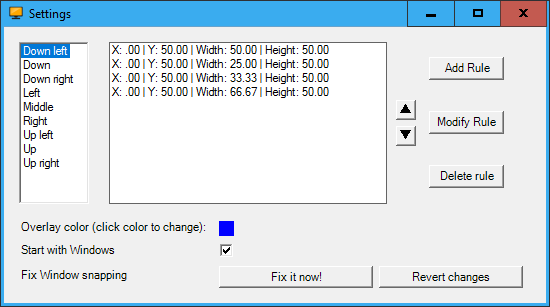
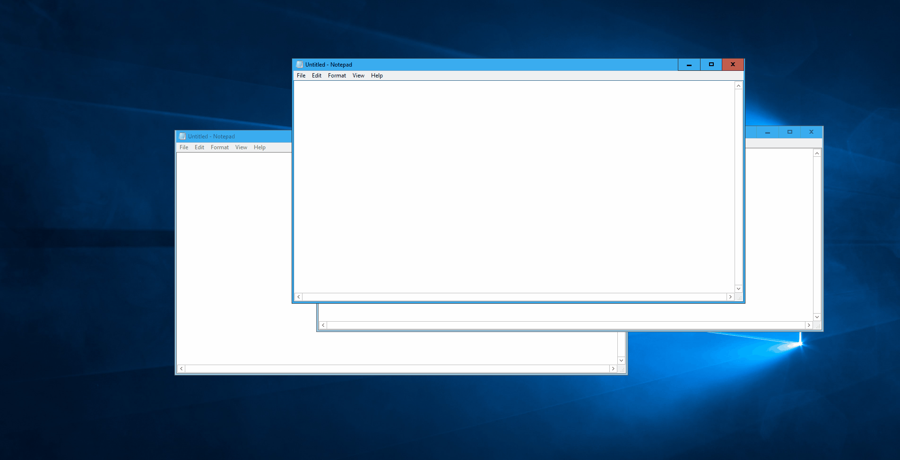

Welcome to Window Manager
Managing windows on Windows has always been cumbersome. It was improved in Windows 7 with the newly added snapping functionality and taken futher in Windows 10, allowing snapping to all four corners of a screen. Even though Windows has improved it is still not quite powerful enough to match the expectations of power-users.
This project is mainly inspired by WinSplit revolution which sadly was discontinued and no viable alternatives are available. WindowManager provides the same core functionality with some extra features which are listed below:
- Fully customizable
- Arrange windows with powerful shortcuts
- Select windows with powerful shortcuts
- Totally free
Screenshots


Usage
Moving the active window can be achieved by pressing CTRL + Alt + [1-9] on the Numpad. For example NumPad 7 moves the Window into the top-left corner. Repeatedly pressing the same NumPad button will circle through all available configurations. How the rules for each button can be changed will be explained later on.Activating a window can be done by pressing CTRL + Alt + NumPad0 + [1-9]. Pressing CTRL + Alt + NumPad0 will show an overlay which can be moved around with [1-9] on the NumPad in a similar way as moving the active window. This will set the top-most window, completely covered by the overly, as the active window.
Settings
The Settings menu can be opened by right-clicking on the tray-icon. It will show a window similar to the one shown in the screenshot above. To change the rules for a certain button we can select it in the left pane. This will show the different rules for this particular button in the order they are circled through. With the three buttons on the right (Add Rule, Modify Rule and Delete Rule) we can add, modify and delete the rules for this button. With the two arrow buttons we can rearrange the order of the rules. All values in a particular rule are measured in percentages. Now we will explain how these four different values influence a rule:- X: the X-value has value 0 at the left side of the screen and increases to 100 on the right side of the screen
- Y: the Y-value has value 0 at the top side of the screen and increases to 100 on the bottom side of the screen
- Width: denotes the width of the window in percent. So a value of 50 will make a window span 50% of the available screen width starting at X-value
- Height: similar to width but denotes the height of the window
We can enable the checkbox next to "Start with Windows" so the application is run when windows starts.
The last setting can be used to fix a problem in Windows 10 where there is an invisible margin around many windows which can be annoying. The exact details applied in this fix can be seen in the next section.
Technical details
This sections will focus on the changes that are applied when the window snapping is fixed. This is a problem only appearing on Windows 10. The problem is that many windows have a transparent margin so the snapping of windows will always look a little off. To fix this problem we need to activate an aero-lite theme hidden in Windows 10.The exact changes are described below:
- Copy aero.theme in C:\Windows\Resources\Themes to aerolite.theme
- In the "Theme" section add "Displayname=Aero Lite"
- In the "VisualStyles" section add "Path=%ResourceDir%\Themes\Aero\AeroLite.msstyles"
- Activate theme
Both these changes can be reverted by clicking the "Revert changes" button in the Settings Menu.